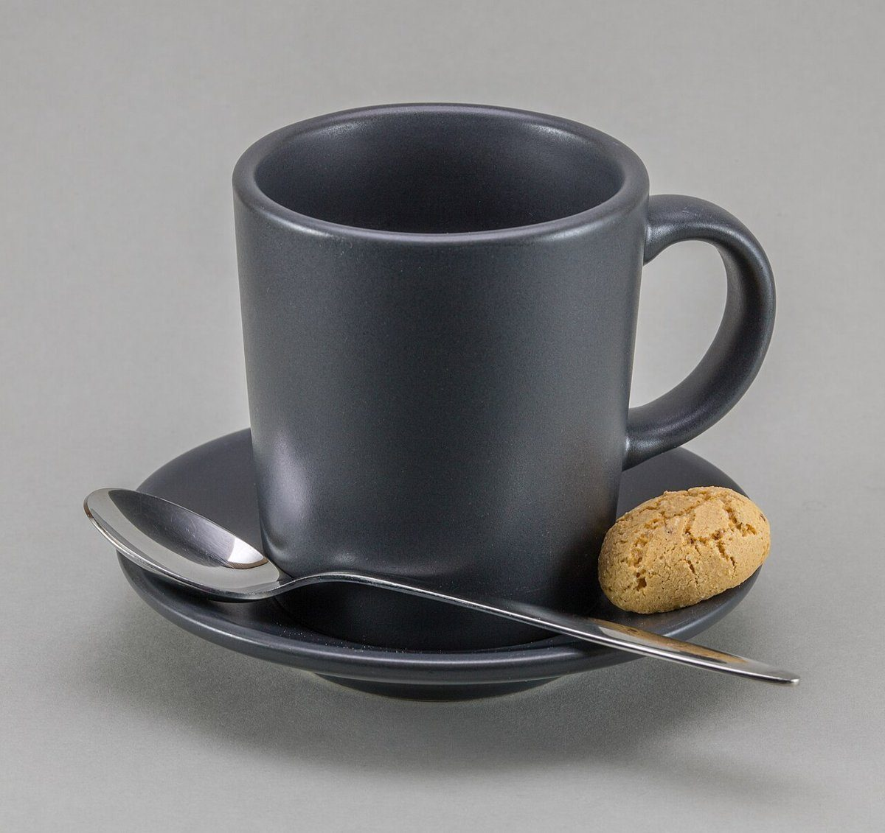

02店のことAllez le pain
制作側の連想: ゼッケンと安全ピン
店のこと
確認できているのは、所在地とInstagramのアカウントだけです。
「想像してみる」の部分は制作側の想像で、お店の実際の様子・考え・提供内容とは関係ありません。
確認できていること
- 店名は「Allez le pain(アレ・ル・パン)」、業種はカフェ
- 所在地は千葉県市川市市川2丁目32-5(〒272-0034)
- 電話番号はなし。連絡はInstagramから
- 提供内容・営業時間・定休日・価格・ご予約・駐車場は準備中

想像してみる
ゼッケンの裏には、何を書く?
走る人がゼッケンの裏に名前や連絡先を書くように、このページも、書けることが増えたら少しずつ書き足していく前提で作っています。いまは空欄のまま。空欄は、これから埋まる場所です。

